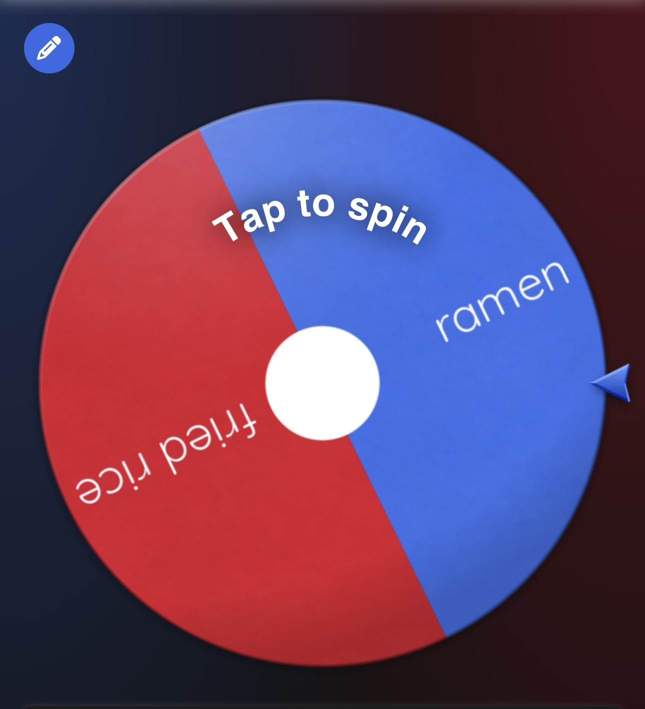
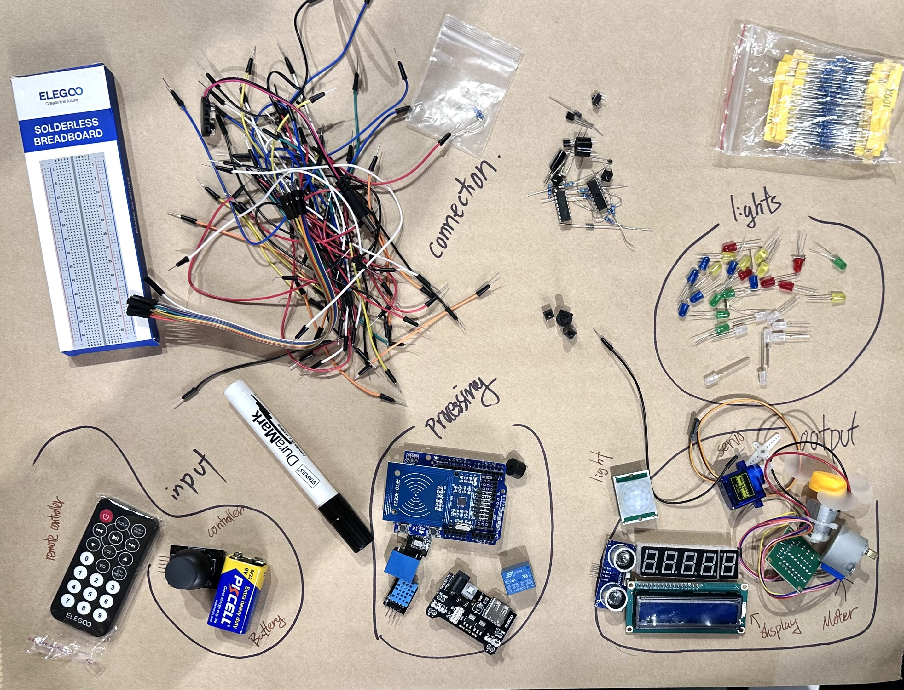
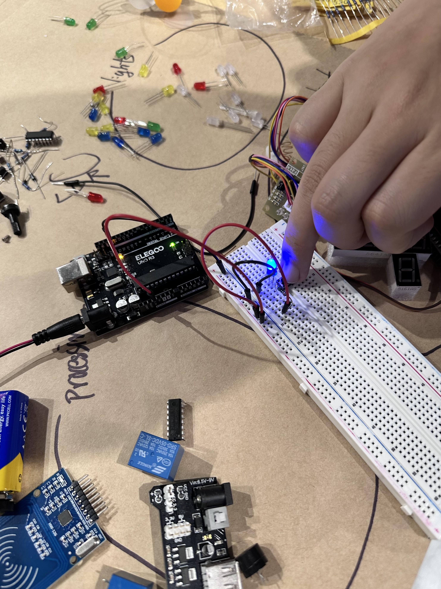

I used randomwheel.org to make decisions for the day: what to wear, what to do, all left to chance. I actually use this site all the time with friends when nobody can agree on where to eat, so seeing it reframed as “algorithmic thinking” was kind of funny. The outfit I spun ended up looking pretty good, but I did get unlucky with coffee instead of boba tea. Then, coming to the Telstra Creator Space for the first time, I got handed a box of Arduino parts we had to identify without any instructions. As a graphic design student who is completely clueless about technology, this felt genuinely overwhelming@@ Like being handed a puzzle with no picture on the box. But after a lot of staring and guessing with my group, we actually got an LED to light up! and pretty fast compared to the rest of the class. That small win felt really good. I think studying these going to be a lot, it’s going to be hard, but it might actually be worth it.